How To Add Shared Disk To A Virtual Machine
-
Log in, as root, to one of the ESX servers that can access the data store on which you want to place the shared disk.
ssh root@pes071esx01
-
Change directory to the location where the datastore resides.
cd /vmfs/volumes/TEST5_Data
-
Make sure there is enough space in the datastore to create the disk.
df | grep "$PWD"
-
If the shared directory does not exist create it.
# mkdir shared
-
Change directory to the shared directory.
cd shared
-
Create the disk.
/sbin/vmkfstools -c 100G -d eagerzeroedthick ASM01.vmdk
-c 100G : Size of the disk. ASM01.vmdk : Name of the disk
-
Open the VMware vSphere Client and login.
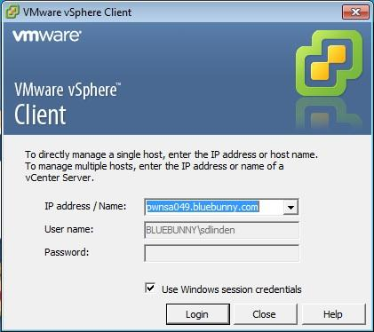 -
All virtual machines that will have the disk assigned to them must be shutdown.
-
Select the virtual machine that will have the disk assigned.
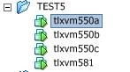 -
Edit the virtual machine settings.
-
Click the Add button.
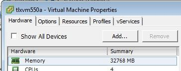 -
Select "Hard Drive" from device type window and click the Next button.
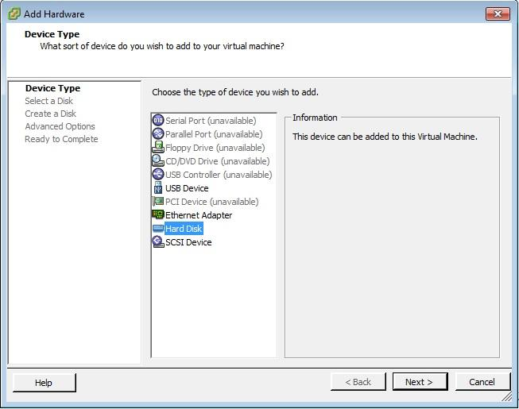 -
Select "Use and existing virtual disk" and click the Next button.
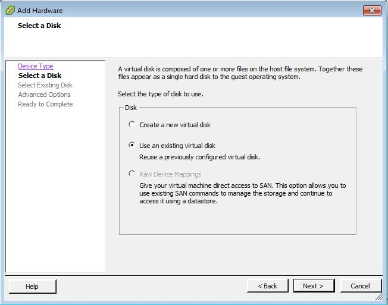 -
Click on the Browse button, select the disk you created and click the Next button
-
Select a Virtual Device Node.
If this is the first shared disk select a Virtual Device Node that has a controller number that has not been used. The controller number is the first of the numbers separated by a colon. EXAMPLE: Device SCSI (1:0) has the controller number of 1. If there are other shared disk select the next available Virtual Device Node on the shared controller number.
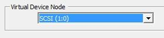 -
Check the Independent check box and click the Next button.
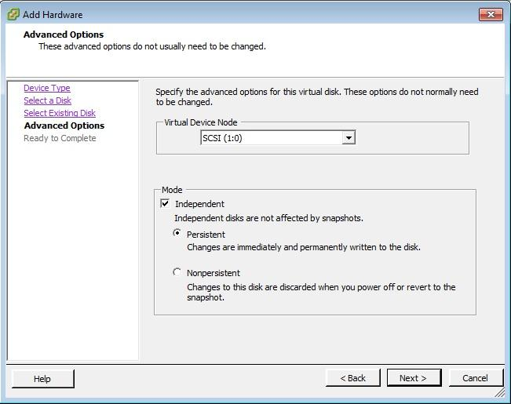 -
Verify the options and click the Finish button.
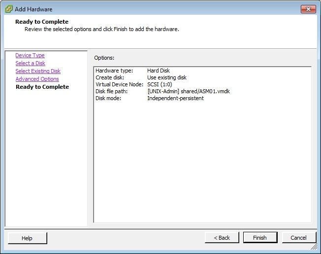 -
Click the OK button.
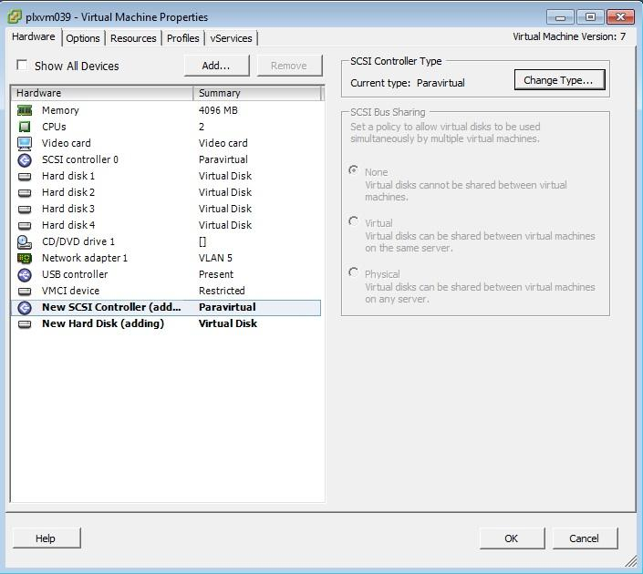 -
Edit the virtual machine settings again.
-
Click on the Options tab, select General in the Settings window and click the Configuration Parameters button.
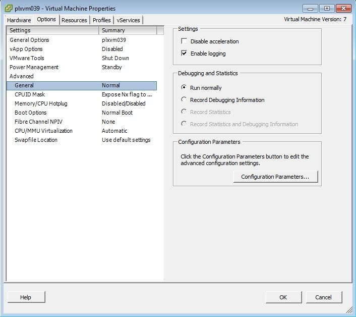 -
Click the Add Row button.
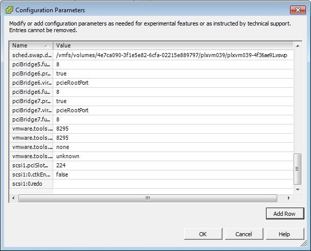 -
Enter the "Virtual Device Node.sharing" in the first column and "multi-writer" in the second column and click the OK button
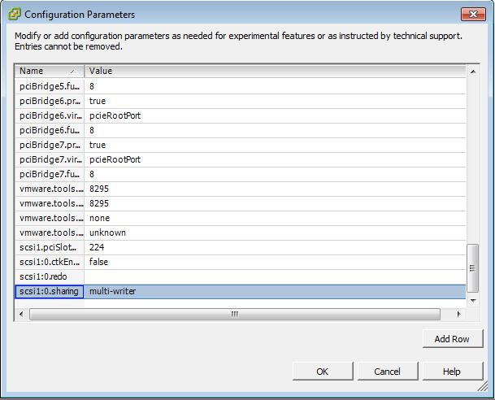 -
Click the OK button to save the Virtual Machine Properties.
-
Repeat steps 9 through 23 for each virtual machine that is to have access to the shared disk
-
Boot up virtual machines and the disk should be available.